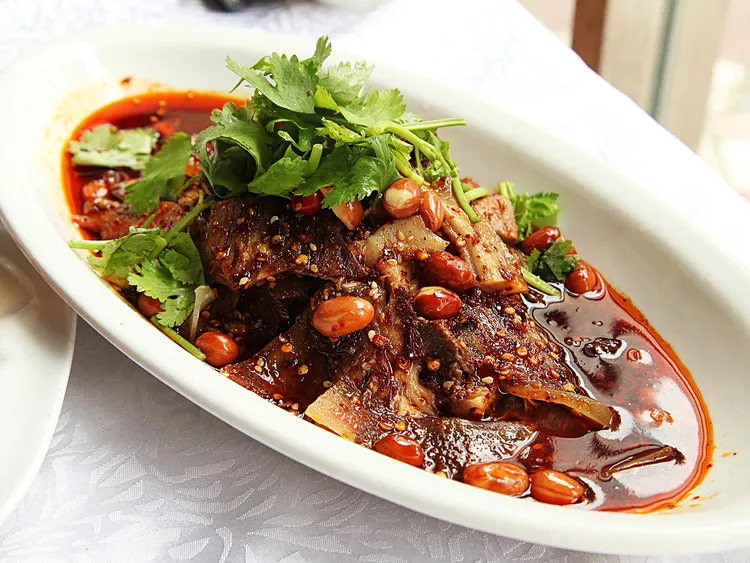
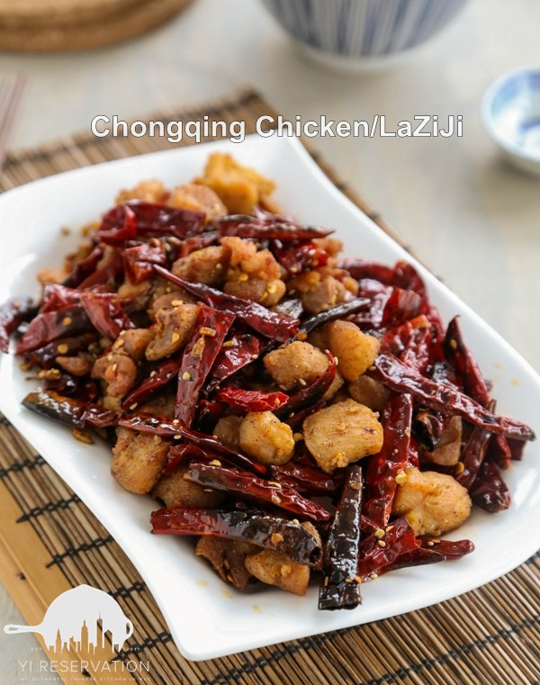
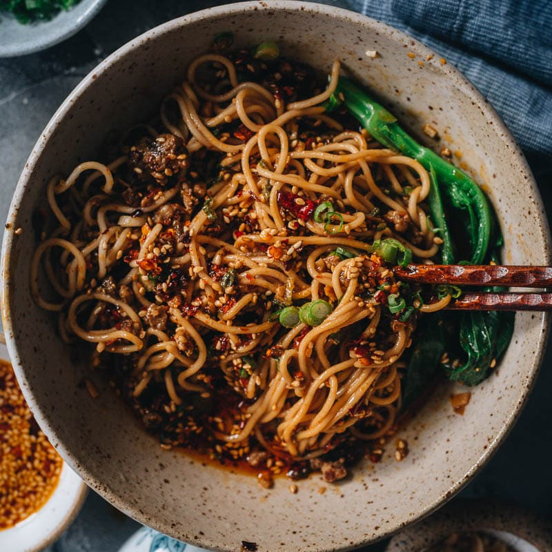

A thinly sliced beef and tripe dressed in a fiery chili oil sauce with peanuts, leaving a spicy kick.

---Lazi Ji (Pepper Chicken)---
Lazi Ji, roughly translated to pepper chicken, is a dish with bite-sized chicken pieces stir-fried with a mountain of dried chilies, creating a smoky, spicy delight.

---Gongbao Jiding---
A sweet, spicy, and savory diced chicken stir-fried with peanuts and dried chilies, an iconic Sichuan favorite.
---Dan Dan Mian---
A savory wheat noodles dish topped with minced pork, chili oil, garlic, and vinegar for a tangy, spicy punch.

---Chuanbei Liangfen---
A cool and slippery mung bean jelly noodles served in a numbing-hot chili sauce, perfect for people wanting a spicy kick.